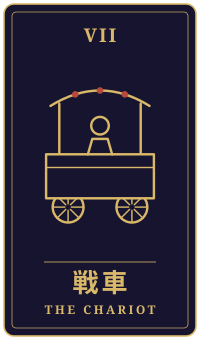

寸法
物語の手前に、ひとつの相談がありました。三枚のタロットをめぐるやりとりを、聞こえたままに書き留めています。
持ち込まれた相談
大学4年です。来春から地元の金融機関で働くことが決まっています。在学中に借りた奨学金の利率が、卒業する月に決まると知ってはいたのに、今になって数字を見て足がすくみました。誰のせいでもないのに、なぜか自分だけ損をした気がしています。先週、高2の弟が進学したいと言い、母が「お姉ちゃんの時みたいに奨学金で」と笑いました。弟には借りてほしくない。でも、弟が楽に行けたらそれはそれで悔しい気がして、そんな自分が嫌になります。本当はやりたかったことも、返すことを考えて選ばなかった。弟にどんな言葉をかければいいのか、私はこの先どう向き合えばいいのか、見てもらえますか。
タロットの読み解き

過去
戦車・逆位置
戦車の逆位置が過去に出ています。この向きは、勢いよく進んでいたものが行き先を見失い、焦りが先に立つ状態を表すと言われています。奨学金の数字を見て足がすくんだのは、あなたが弱いからではなく、これまで必要以上に急ぎ、先のことを一人で抱えてきたからかもしれませんね。
「誰のせいでもないのに、自分だけ損をした気がする」という感覚も、その焦りの中から生まれたものなのでしょう。やりたかったことを返済の不安から選ばなかったと語るあなたの言葉には、まっすぐな責任感がにじんでいます。

現在
恋人・逆位置
恋人の逆位置が現在に出ています。この向きには迷い、そして気持ちの不調和が表れると言われています。今のあなたは、弟への思い、母への気持ち、自分の本音の三つが、うまく重なり合わずにいるのかもしれません。
弟が楽に進めたら悔しいと感じてしまうのは、自分の選択を否定したくない気持ちと、弟には同じ苦労をさせたくない気持ちが、同時に心の中にあるからでしょう。どちらも大切な感情で、そんな自分を嫌いになる必要はないと思います。

未来
正義・正位置
正義の正位置が未来に出ています。公正さやバランス、誠実な判断を示すカードです。ここには、いまの揺れを一度ほどき、自分にとって何が公平で、何が誠実なのかを見つめ直す道筋が示されているように感じられます。
弟に伝えたい言葉は、「借りるかどうか」より先に、「あなたがどう生きたいかを一緒に考えよう」という姿勢なのかもしれません。奨学金の制度や返済の仕組みは、大学の窓口や日本学生支援機構、そして金融の専門家に確かめながら、家族みんなで現実的に比べてみるとよいでしょう。
最後に
このカードの並びは、焦りと迷いを経て、公正な視点へ戻ってくる流れを示しているように見えます。あなたが背負ってきた選択は、弟を縛るものではなく、弟が自分で選ぶための材料にできるのではないでしょうか。
まずは「自分が損をした気がした」という気持ちを、責めずに認めてあげてください。そのうえで、弟には「借りてもいいし、借りなくてもいい。選べるように一緒に調べよう」と伝えてみてはどうでしょう。答えを急がなくても、道は少しずつ見えてくるはずです。
帰り際の問い感情と損得を除いたとき、事実は何を示すか。
読み解きは、タロット占い「月夜のアルカナ」が、この相談と引かれた三枚から返したものです。小説は同じ三枚を、別の角度から描いています。相談者は物語のための架空の人物です。相談文・読み解き・短編本文は、いずれも生成AIを使って制作しています。
物語に戻る